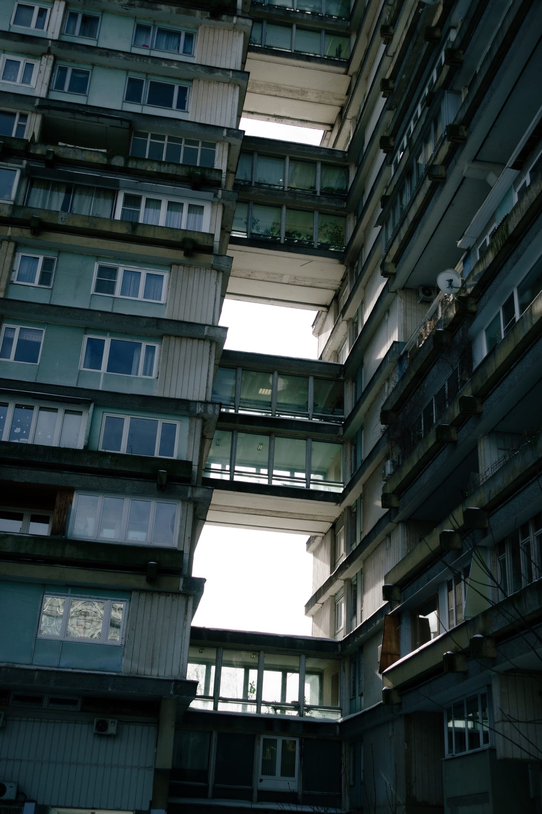

If the sky were to suddenly open up, there would be no law, there would be no rule. There would be only you and your memories, the choices you've made and the people you've touched.
На небесах трубили тревогу: горели сигнальные факелы, пускались ракетницы, захлёбывались телефоны и телеграфы, но всё по-тихому, официально, так, чтобы Главный не почуял общего невроза. Из каждого утюга звучал сигнал SOS, во всех небесных газетах на главной странице большой и душераздирающий заголовок оповещал о страшном. Нет, это была не очередная атака армии Ада и не столкновение с попсовой Нибиру, это был конец. Господь решил, что он устал. Вялой походкой, расхаживая босиком по ажурной глади пола, выполненного под стиль «аля облачная равнина», он диктовал условия закрытия своего проекта. Писарь строчил за ним не без энтузиазма, но с горечью в сердце и слезами на глазах. Карандаши ломались чаще, чем женские ногти в кегельбане, но он писал, ведь не мог иначе.
— Деревья сжечь, океаны высушить, всё живое — безболезненно отключить, — диктовал бесстрастно Создатель. Причина была понятна всем без слов: наскучило. Главные советники выстроились полукругом перед Ним и попросили дать им шанс переубедить.
— Дерзайте, у вас полчаса, а я пока подумаю над новым проектом, — отмахнулся Он, набрасывая что-то там на бумаге и пробуя лепить из спичек и пластилина. — Вы только подумайте, сколько прекрасного пропадёт навечно! — начал было первый. — Не тяни этого, как его, ну кого там обычно тянут? — Кота? —Да, не тяни бедного кота за яйца — я не для этого его создавал! — Да вот хотя бы — коты! Прекрасные создания, умные, добрые, нежные существа, — он достал из-за пазухи котёнка и протянул Создателю, чтобы тот умилился и передумал. — Да, и правда, — погладил Он кота и посадил к себе на коленки. Тот заурчал и расслабился. Все выдохнули — Земля спасена. Создатель решил его погладить между ушками, а усатый хватанул его за руку зубами и задними лапами начал царапать руку. — От злодей какой! Я же тебя погладить хотел! Котёнок небрежно спрыгнул с колен и вальяжно пошёл по своим делам. — Предатель, — прошипел советник, глядя на вылизывающееся животное. — Коты — это здорово, но они прекрасно обходятся без всех остальных, сделаем для них отдельную планету, а эту за-кры-ва-ем. — Ну подождите! — взял слово второй советник. — А как же люди?! — А этих вообще нужно было сразу выгонять! Одно разочарование! — Ну ведь не все же они плохие, вот смотрите, у нас тут милый мальчик Ваня.
Галерея